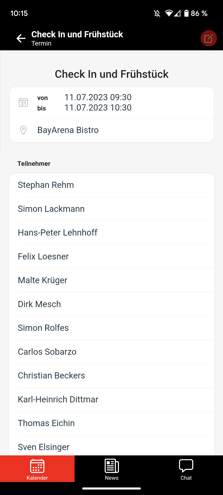
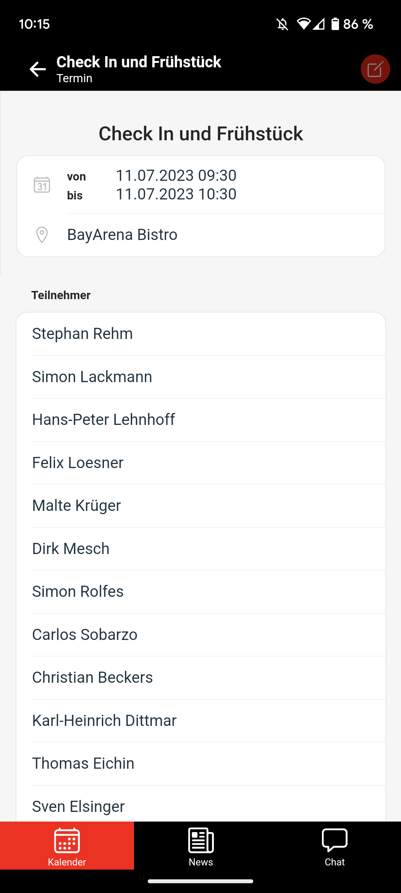

zurück
zurück
Die Kalender-Funktion bietet dir eine Übersicht über anstehende Termine. Du findest die Funktion auf dem Handy unter dem Reiter Kalender und in der Desktop-Version auf dem Dashboard. In der folgenden Anleitung sind zur Veranschaulichung jeweils Screenshots aus beiden Systemen eingefügt. Mit der Kalender-Funktion kannst du auf den ersten Blick kannst du sehen, wie viele Termine du an einem bestimmten Datum hast und um wieviel Uhr und an welchem Ort sie stattfinden. Klickst du auf einen Termin, siehst du weitere Informationen, wie zum Beispiel die Teilnehmer und den Ersteller des Termins.
Mit der Kalender-Funktion kannst du auf den ersten Blick kannst du sehen, wie viele Termine du an einem bestimmten Datum hast und um wieviel Uhr und an welchem Ort sie stattfinden. Klickst du auf einen Termin, siehst du weitere Informationen, wie zum Beispiel die Teilnehmer und den Ersteller des Termins.
 


Ausgewählte Nutzer können Termine erstellen. Bist du dafür berechtigt, kannst du in der Kalender-Übersicht „Neuer Termin…“ auswählen. Jetzt trägst du zunächst die Kopfdaten des Termins, wie Titel, Zeitpunkt und Ort ein. Du kannst außerdem Notizen mit Links und Telefonnummern hinzufügen.

Als nächstes kannst du die Empfänger des Termins auswählen. Das funktioniert entweder anhand der Team-Gruppen und -Rollen oder in der individuellen Auswahl. Die Ansicht änderst du mithilfe der Reiter „TeamORGA“ und „Individuell“. Auch eine gemischte Auswahl ist möglich.


Du bestätigst die Auswahl mit einem Klick auf den Haken. Danach ist der Termin für die ausgewählten Gruppen, Rollen oder Nutzer im Kalender sichtbar.
Das Erstellen von Terminen funktioniert genau so auch in der Desktop-Variante. Hier öffnet sich eine Bedienfläche mit allen vorgestellten Funktionen.

Wenn du den Termin in der Terminübersicht anklickst, kannst du alle Informationen einsehen. Mithilfe des Buttons oben rechts kannst du den Termin bearbeiten. Die Änderungen kannst du wieder Klick auf den Haken bestätigen. Wählst du die Mülltonne aus, kannst du den Termin für alle Teilnehmer löschen.